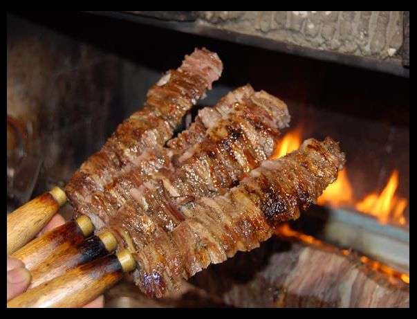
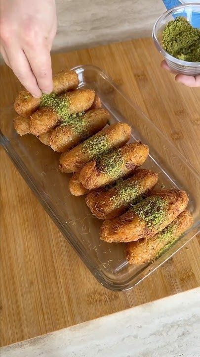
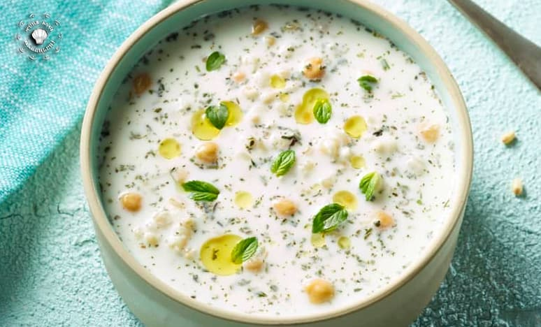
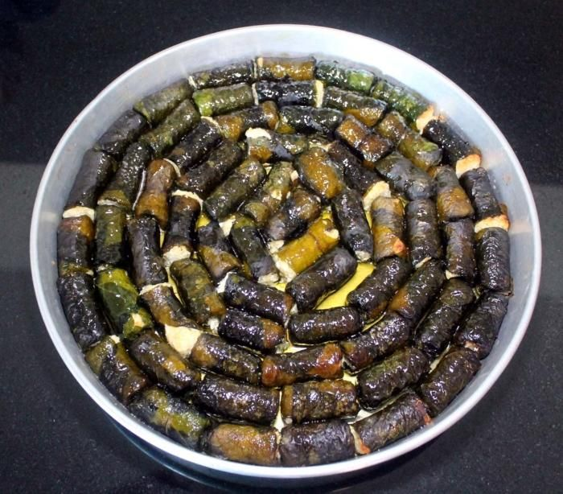
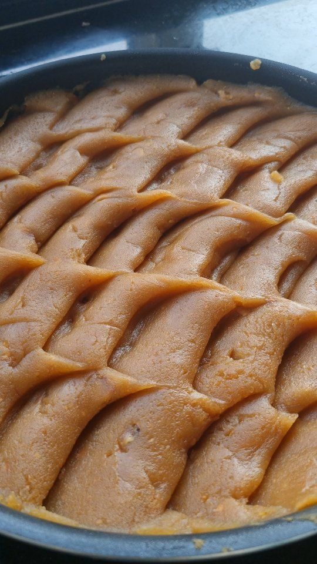
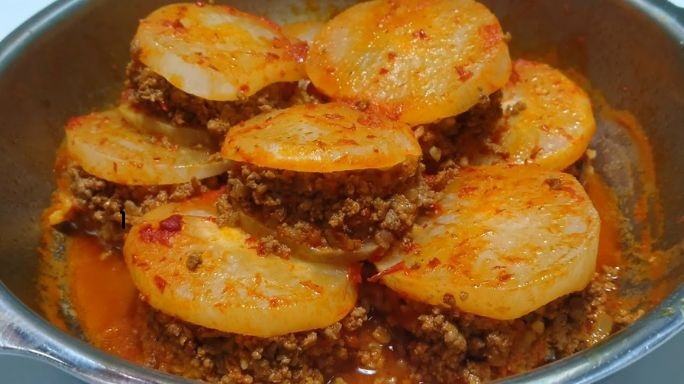
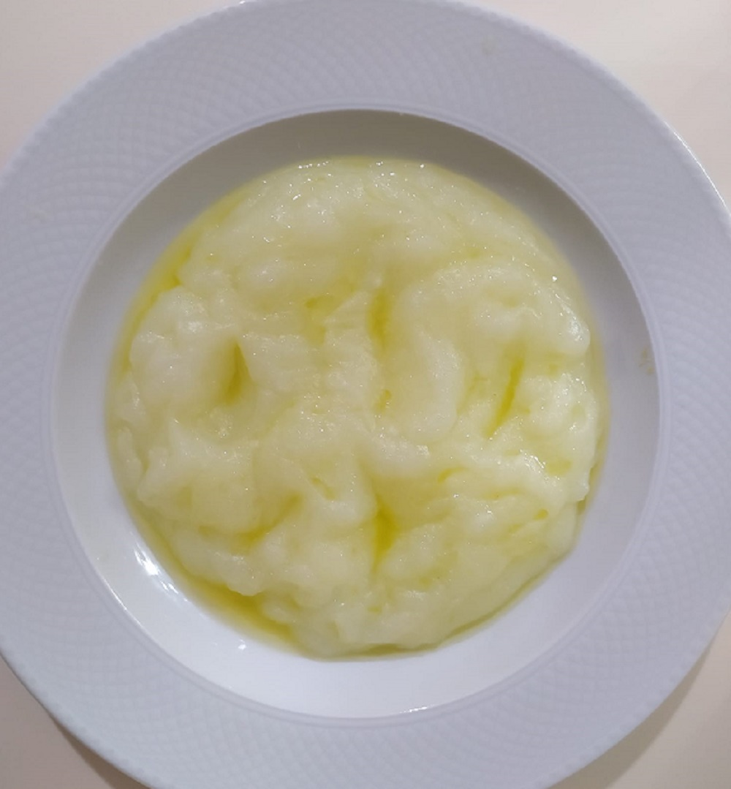
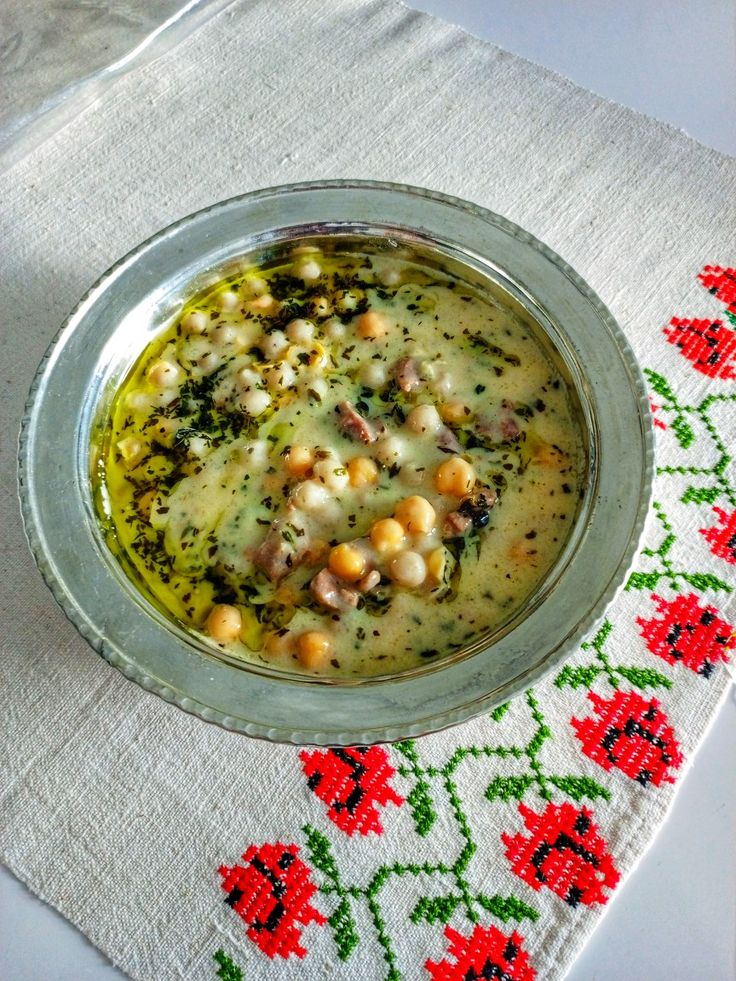

Kuzu etinin özel baharatlarla pişirilmesiyle hazırlanan tescilli lezzettir.

Kuzu etinin özel baharatlarla pişirilmesiyle hazırlanan tescilli lezzettir.

Tel kadayıfın cevizle buluşup kızartıldığı efsane Erzurum tatlısıdır.

Aşotu (kişniş) ile lezzetlenen yoğurtlu ve buğdaylı ferah çorbadır.

Pazı yaprağına sarılı taze lor ve tereyağlı bir Erzurum klasiğidir.

Köy tereyağı ile uzun süre kavrulan yoğun kıvamlı meşhur tatlıdır.

Şalgam dilimleri arasına kıymalı harç konularak yapılan özgün yemektir.

Nişasta ve şekerle yapılan, enerji veren tarihi bir Erzurum tatlısıdır.

Süzme yoğurt ve kişnişin aromatik uyumuyla hazırlanan özel çorbadır.